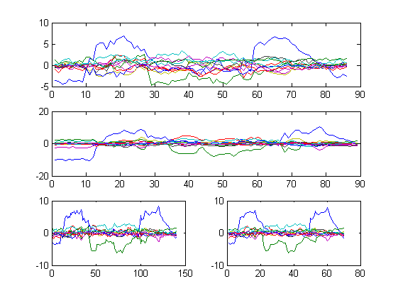

GAUSSMM
Calculates DTW distance between two feature matrices, then builds a third matrix generated with multivariate Gaussian mixture model (GMM) using DTW path found; finally produces a reshaped, half sized, matrix from the third one.
ARGUMENTS: - mfccA, mfccB: extracted feature matrices from WAV files - debugMode: [optional] 0 = No (default) | 1 = Yes
OUTPUT: - mfccC: resulting matrix from DTW and mGMM calculation - mfccReshaped: reshaped, half sized, matrix from mfccC
Contents
Copyright (C) Luca Lorusso 2014 - Sapienza Universita' di Roma
DTW is a MATLAB function from MATCHBOX, a prototype which applies Dynamic Time Warping on MFCC features in order to compare two spoken words for similarity. Home page: https://github.com/hfink/matchbox/tree/master/matlab
GAUSSMIX is a MATLAB function from VOICEBOX, a library for speech processing. Home page: http://www.ee.ic.ac.uk/hp/staff/dmb/voicebox/voicebox.html
Initializing data
function [mfccReshaped, mfccC] = gaussMM(mfccA, mfccB, debugMode)
if nargin < 3 debugMode = 0; end window_size = 15; % WHAT IS THE BEST VALUE?
Processing features with Dynamic Time Warping algorithm
[~, ~, ~, path] = dtw(mfccA', mfccB', window_size); % caluclating DTW path if mod(size(path, 1), 2) ~= 0 % if size(path, 1) is odd path(end, :) = []; % cut last row end mfccC = zeros(size(path, 1), size(mfccA, 2)); % preallocating output matrix mfccReshaped = zeros(size(path, 1) / 2, size(mfccA, 2)); % preallocating reshaped output matrix for j = 1 : size(mfccA, 2) % for each coefficient vector pair (12 by default)... mfccPath = zeros(size(path, 1), 2); ...preallocate a similarity two-dimensional coefficient vector... for k = 1 : size(path, 1) % ...and build the similarity vector using DTW path mfccPath(k,1) = mfccA(path(k,1), j); mfccPath(k,2) = mfccB(path(k,2), j); end tempV = gaussmix(mfccPath', [], [], 1); % filling current vector using GMM from similarity vector mfccC(:,j) = tempV; % populating mfccC mfccReshaped(:,j) = sum(reshape(tempV,2,[])).'/2; % reshaping vector and populating mfccReshaped end
Plotting debug mode
if debugMode == 1 subplot(311); plot(mfccA); subplot(312); plot(mfccB); subplot(325); plot(mfccC); subplot(326); plot(mfccReshaped); end
end